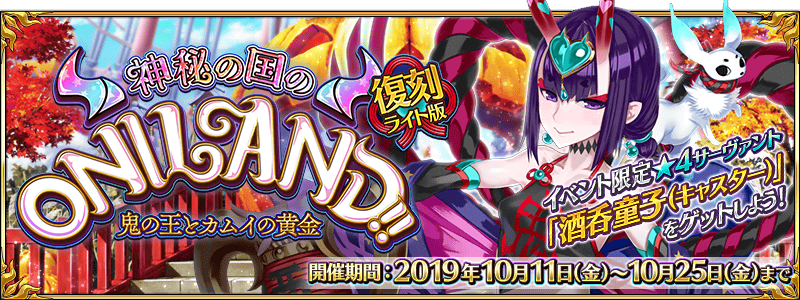
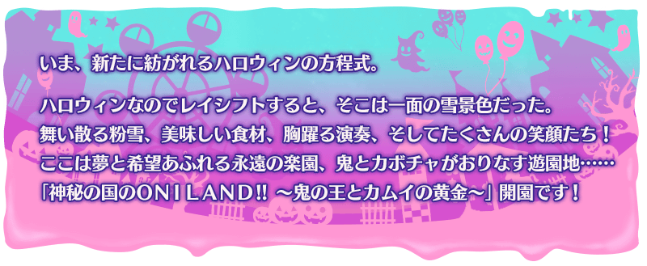

預定自2019年10月11日(五)舉辦期間限定活動「復刻:神秘之國ＯＮＩＬＡＮＤ!! ～鬼王與卡姆伊的黃金～ 輕量版」！
歡迎來到安心又安全、愛與和平的娛樂殿堂！
本Land來者不拒，歡迎所有的客人！
本活動中進行主線關卡的話，活動限定從者「★4(SR)酒吞童子(Caster)」會以期間限定暫時加入。
再加推進主線關卡，讓「★4(SR)酒吞童子(Caster)」正式加入吧！
本活動中享受故事的主線關卡將逐日開放，在10月17日(四) 7:30，會開放以活動參加中的御主全員挑戰強敵，特殊形式的關卡！
※本頁面皆為開發中圖片。會有與實際圖片相異的情況。 ※本活動為再調整一部份在2018年舉辦的期間限定活動「神秘之國ＯＮＩＬＡＮＤ!! ～鬼王與卡姆伊的黃金～」更容易遊玩的「復刻輕量版活動」。 ※關於真名尚未判明的從者，會透過主線記錄的關卡的進行度讓從者的名稱變化。 ※本公告中，會記載隱藏真名的對象從者真名。 ※一部份的關卡為日後開放。
◆活動舉辦期間◆
2019年10月11日(五) 17:00～10月25日(五) 11:59
◆活動參加條件◆
滿足以下條件的御主才能參加
・通過第2部 第2章「Lostbelt No.2 無間冰焰世紀 諸神黃昏 不滅之火的好漢」
※不需要通過亞種特異點(從Ⅰ到Ⅳ)。
◆關於在上次舉辦時已獲得報酬的注意◆
在2018年舉辦的期間限定活動「神秘之國ＯＮＩＬＡＮＤ!! ～鬼王與卡姆伊的黃金～」已獲得特定報酬的情況，會如以下變化。
・在上次舉辦時獲得過「聖杯」的情況，本活動中會以「傳承結晶」代替「聖杯」做為通過報酬。
・在上次舉辦時獲得過「指令紋章」的情況，本活動中的「好朋友點數」達成報酬可獲得稀有稜鏡或魔力稜鏡代替「指令紋章」。
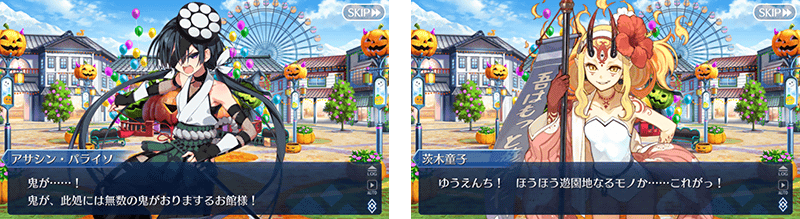
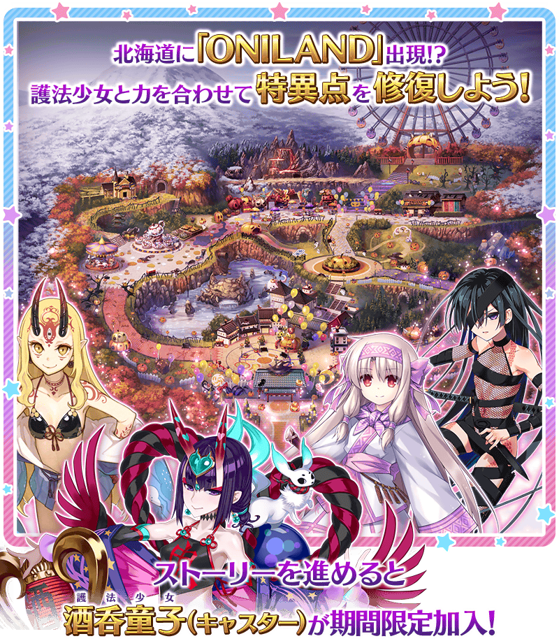 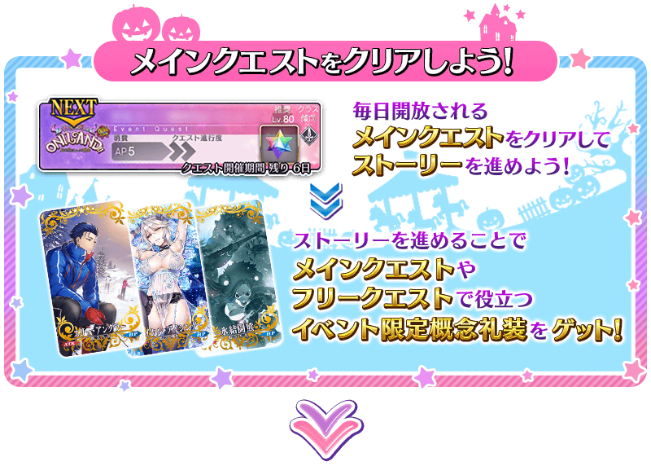 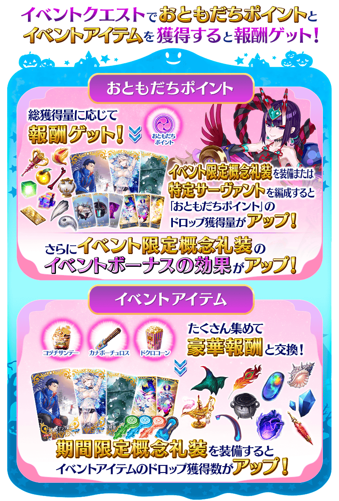 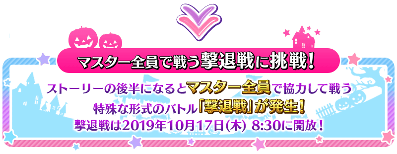 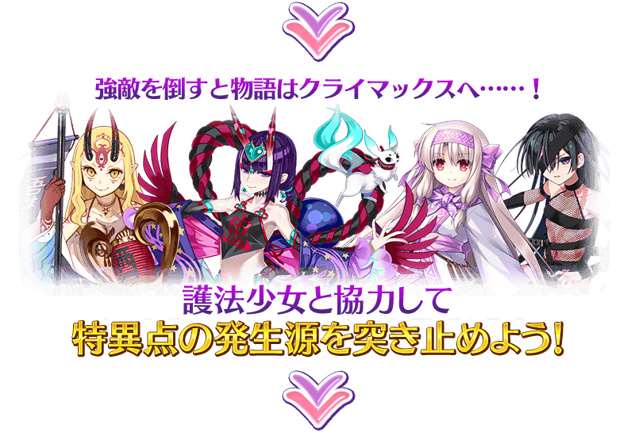 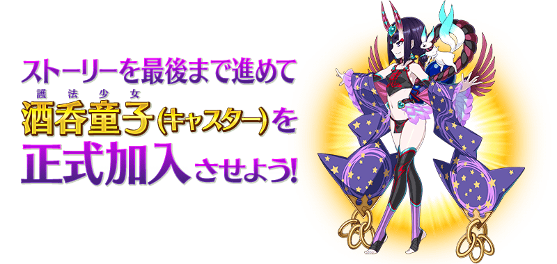
酒吞童子(Caster)為日後正式加入！
通過日後追加的主線關卡後，期間限定從者「★4(SR)酒吞童子(Caster)」就會正式加入。
◆能正式加入時間◆
2019年10月17日(四) 7:30～
※請注意於活動開始初期階段開放的主線關卡結束階段還未正式加入。
享受故事的主線關卡將逐日開放。
另外，通過主線關卡第2話後，會開放可收集活動道具的自由關卡。
之後的自由關卡，會在通過主線關卡後的地點開放。
【關卡的舉辦期間】
| 關卡的種類 | 舉辦期間 |
|---|---|
|
初次記念一口氣開放二話！
主線關卡 第1話～第2話 自由關卡 |
2019年10月11日(五) 17:00～ 10月25日(五) 11:59 |
|
主線關卡 第3話 自由關卡 |
2019年10月12日(六) 7:30～ 10月25日(五) 11:59 |
|
主線關卡 第4話 自由關卡 |
2019年10月13日(日) 7:30～ 10月25日(五) 11:59 |
|
主線關卡 第5話 自由關卡 |
2019年10月14日(一) 7:30～ 10月25日(五) 11:59 |
|
主線關卡 第6話 自由關卡 |
2019年10月15日(二) 7:30～ 10月25日(五) 11:59 |
|
主線關卡 第7話 自由關卡 |
2019年10月16日(三) 7:30～ 10月25日(五) 11:59 |
|
最終回特別！
主線關卡 第8話～第11話 Epilogue 自由關卡 |
2019年10月17日(四) 7:30～ 10月25日(五) 11:59 |
本活動中，可靠主線關卡的通過報酬和活動道具交換、「好朋友點數」達成報酬入手活動限定概念禮裝「スリー・アングラー」「ロイヤル・アイシング」「氷結闘熊」。
裝備這些活動限定概念禮裝的話，會提升各概念禮裝對應的指令卡威力與「好朋友點數」的掉落獲得量。
並且，此活動限定概念禮裝的「指令卡的威力提升」效果は，好朋友點數的總獲得量超過一定値的話會強化威力。
目前的「攻擊威力提升」的效果與下個威力提升前的必要「好朋友點數」，會顯示在地圖畫面與活動報酬畫面的左側，記得先檢查吧。
由於此效果在與主線關卡和撃退戰的強敵戰鬥有利，不斷收集「好朋友點數」，提高威力吧！
 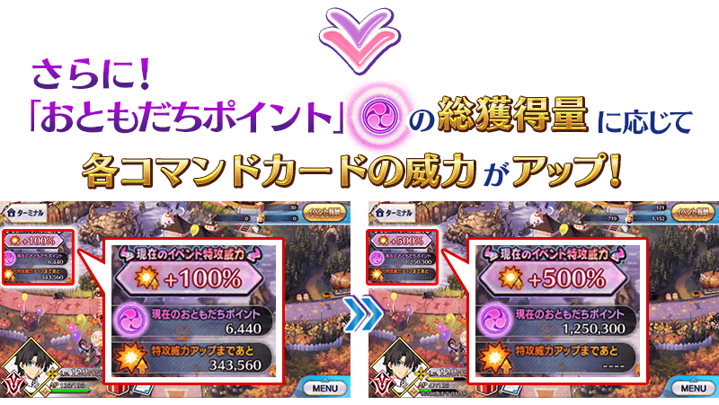
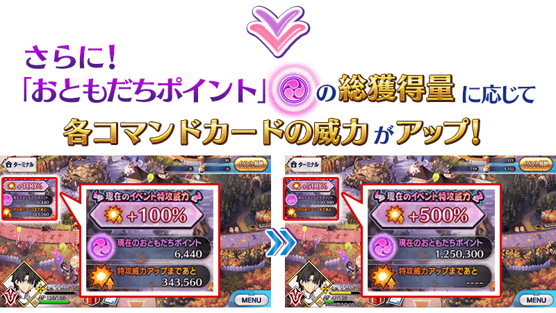
「好朋友點數」的總獲得量會提升活動加成的效果！
強化「指令卡的威力提升」的效果能累計最多500％。
「好朋友點數」的總獲得量到達一定量後，可獲得達成報酬。
達成報酬可在點擊管理室(ターミナル)畫面右上「活動報酬」所顯示的「好朋友點數報酬」畫面確認。
※「好朋友點數」的總獲得量是計算在活動關卡掉落所獲得的好朋友點數。
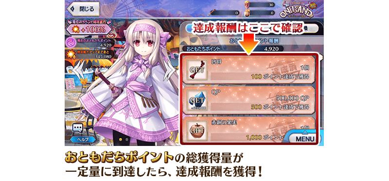
【10月17日(四) 7:30追記】
在第8話(前篇)之後開放的炎舞撃退戰中，會發生靠活動參加中的御主全員撃退強大敵人的特殊形式戰鬥。
在炎舞撃退戰出現的敵人會有「剩餘戰鬥數」，關卡中每使HP變為0的話可減少1次。
「剩餘戰鬥數」是所有御主共有，靠御主全員多次通過炎舞撃退戰，使「剩餘戰鬥數」變為0次才能將敵人撃退。
「剩餘戰鬥數」變為0次後會發生「終結戰(とどめ戦)」，可更推進故事。
多次挑戰炎舞撃退戰，目標將敵人撃退吧！
※在炎舞撃退戰會有3種難易度，通過時的「剩餘戰鬥數」減少數，無論何種難易度都是1次。 ※戰鬥中就算全滅，也可使用令咒3劃或聖晶石1個續關。 ※「剩餘戰鬥數」變為0次後結束炎舞撃退戰，在那之後無法參戰炎舞撃退戰。
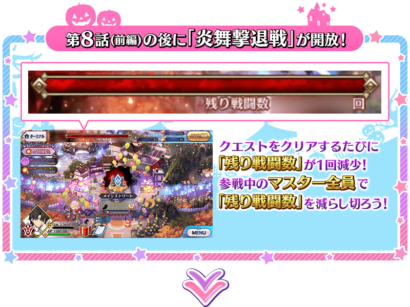 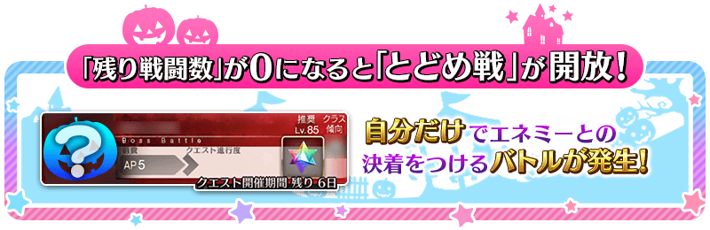
※在「終結戰」之後追加的第8話(後篇)關卡開放，會有需要從炎舞撃退戰結束後些許時間的情況。

【10月17日(四) 7:30追記】
以通過期間限定活動「復刻:神秘之國ＯＮＩＬＡＮＤ!! ～鬼王與卡姆伊的黃金～ 輕量版」Epilogue的御主做為對象，開放高難易度的「挑戰關卡。。
「挑戰關卡」就算通過後也不會消失，能無數次挑戰，可以變更從者和概念禮裝的組合後再次挑戰。
※「挑戰關卡」為酒吞童子(Caster)本活動中限定的職階技能效果「自身的NP以50％累積狀態開始戰鬥」的對象外。 ※關卡通過報酬、戰利品、御主EXP、魔術禮裝EXP、絆點數只可在初次通過時獲得。
◆挑戰關卡開放時間◆
2019年10月17日(四) 7:30以後(炎舞撃退戰結束後)
◆挑戰關卡參加條件◆
滿足以下條件的御主才能參加
・通過期間限定活動「復刻:神秘之國ＯＮＩＬＡＮＤ!! ～鬼王與卡姆伊的黃金～ 輕量版」的Epilogue
◆挑戰關卡初次通過報酬◆
傳承結晶 1個
超值攻略方法・其1
本活動的期間中，強化「★4(SR)酒吞童子(Caster)」時的獲得經驗值變成2倍。
是讓成為活動加成對象的「★4(SR)酒吞童子(Caster)」等級一口氣上升的機會！
◆舉辦期間◆
2019年10月11日(五) 17:00～10月25日(五) 11:59
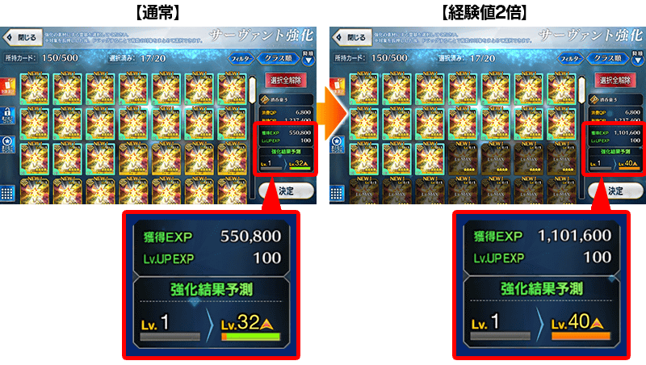
超值攻略方法・其2
期間限定活動「復刻:神秘之國ＯＮＩＬＡＮＤ!! ～鬼王與卡姆伊的黃金～ 輕量版」的關卡以限定對「★4(SR)酒吞童子(Caster)」追加特殊效果！
「★4(SR)酒吞童子(Caster)」在本活動的主線關卡及撃退戰，可以自身的NP累積50％狀態開始戰鬥。
並且，在所有的活動關卡，可以自身的攻擊力提升100％狀態開始戰鬥。
※自由關卡為「自身的NP累積50％狀態開始戰鬥」效果的對象外。
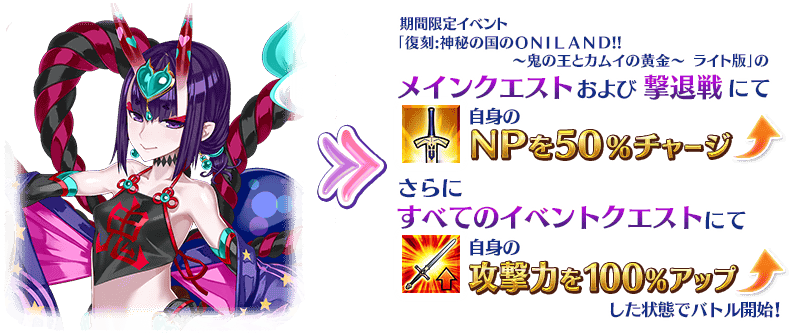
超值攻略方法・其3
本活動的期間中，下表的從者在活動關卡中會得到「好朋友點數」的掉落獲得量與「絆點數」的獲得量提升。
強化對象從者，挑戰活動吧！
※活動加成的效果量因從者而異。
※瑪琇・基利艾拉特「絆點數獲得量提升」效果，是所謂「我方全體含候補的絆點數獲得量提升」的效果。支援時此效果無效。
※關於真名尚未判明的從者，會透過主線記錄的關卡的進行度讓從者的名稱變化。
※自10月9日(三) 17:00，在從者選擇畫面和從者強化畫面等，追加活動加成篩選器。
由於是只顯示於活動活躍從者的便利功能，敬請活用。
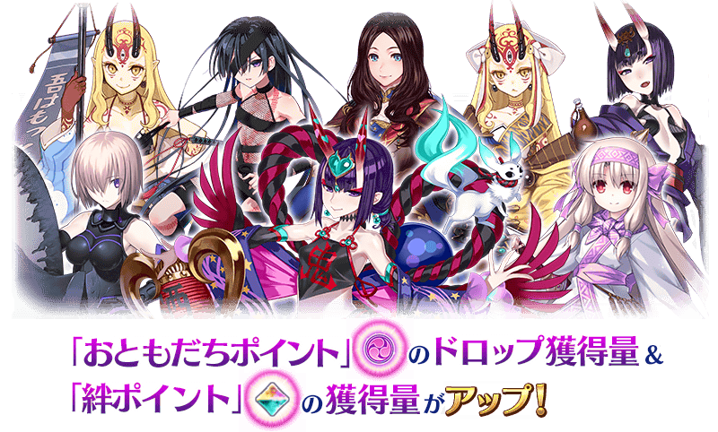
【活動加成的效果量與對象從者】
| 好朋友點數 獲得量 |
絆點數 獲得量 |
職階 | 稀有度 | 從者名 |
|---|---|---|---|---|
| +30% | 只限自身+50％ | Caster | ★★★★ | 酒吞童子 |
| Alterego | ★★★★★ | 志度內 | ||
| +20% | 只限自身+20％ | Lancer | ★★★★ | 茨木童子 |
| Caster | ★★★★★ | 李奧納多・達文西 | ||
| Assassin | ★★★★★ | 酒吞童子 | ||
| ★★★★ | Assassin・樂園(望月千代女) | |||
| Berserker | ★★★★ | 茨木童子 | ||
| 我方全體+5％ | Shielder | ★★★ | 瑪琇・基利艾拉特 | |
| +10% | 只限自身+20％ | Saber | ★★★★★ | 紅閻魔 |
| ★★★★ | 弗蘭肯斯坦 | |||
| Archer | ★★★★ | 克洛伊・馮・愛因茲貝倫 | ||
| ★★★ | 尤瑞艾莉 | |||
| ★★★ | 子吉爾 | |||
| ★★★ | 比利小子 | |||
| ★★ | 帕里斯 | |||
| Lancer | ★★★★ | 貞德・Alter・聖誕・Lily | ||
| ★★★★ | 美杜莎 | |||
| ★★ | 加雷斯 | |||
| Rider | ★★★★★ | 司馬懿〔萊涅絲〕 | ||
| ★★★★★ | 李奧納多・達文西 | |||
| ★★★ | 亞歷山大 | |||
| Caster | ★★★★★ | 伊莉雅絲菲爾・馮・愛因茲貝倫 | ||
| ★★★★ | 童謠 | |||
| ★★★★ | 美遊・艾蒂菲爾特 | |||
| ★★★★ | 美狄亞〔Lily〕 | |||
| ★★ | 漢斯・克里斯蒂安・安徒生 | |||
| Assassin | ★★★★★ | 伽摩 | ||
| ★★★★★ | 開膛手傑克 | |||
| ★★★★ | 絲西娜 | |||
| ★★★★ | 不夜城的Assassin(武則天) | |||
| Berserker | ★★★★ | 茶茶 | ||
| ★★★★ | 弗蘭肯斯坦 | |||
| ★ | 靠漫畫了解Berserker(保羅・班揚) | |||
| Alterego | ★★★★★ | 帝王花 | ||
| Foreigner | ★★★★★ | 阿比蓋爾・威廉斯 |
※就算成為對象Servant也會有在本活動的主線劇本未登場的情況。
超值攻略方法・其4
裝備期間限定概念禮裝會提升活動道具的掉落獲得數！
裝備在聖晶石召喚Pick Up的期間限定概念禮裝「Welcome to ONILAND!!」「ただ紅く」「足柄ブラザーズ」的話，會提升活動道具「小槌聖代」「狼牙吉拿棒」「髑髏爆米花」各自的掉落獲得數。
※請注意各關卡的道具掉落率並非100％。
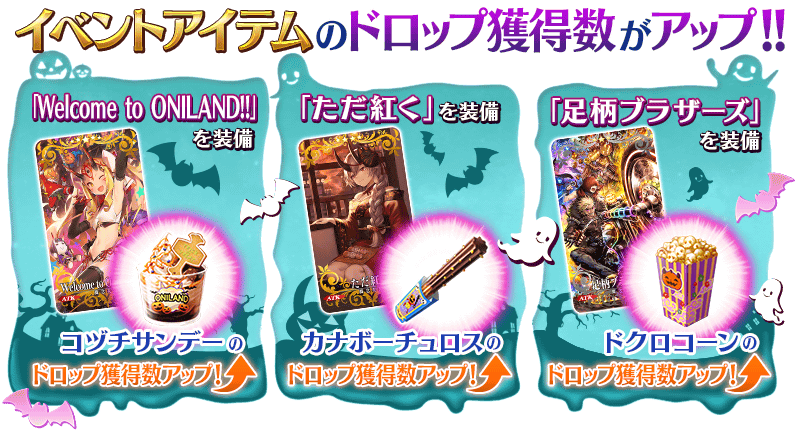
活動道具可自點擊管理室(ターミナル)畫面右上「活動報酬」的「活動道具交換」畫面，交換以下的道具。
※關於英靈結晶・流星之芙芙ALL★4(HP)、英靈結晶・日輪之芙芙ALL★4(ATK)，在通過本活動的主線關卡後才能交換。 ※活動道具交換期間結束後「小槌聖代」「狼牙吉拿棒」「髑髏爆米花」會消失。
◆交換期間◆
2019年10月11日(五) 17:00～11月1日(五) 11:59
◆能用小槌聖代交換的道具◆
 |
【活動限定從者】
【活動限定概念禮裝】
【技能強化＆靈基再臨素材】
【靈基再臨素材】
【其他道具】 |
◆能用狼牙吉拿棒交換的道具◆
 |
【活動限定從者】
【活動限定概念禮裝】
【技能強化＆靈基再臨素材】
【靈基再臨素材】
【其他道具】 |
◆能用髑髏爆米花交換的道具◆
|
【活動限定從者】
【活動限定概念禮裝】
【技能強化＆靈基再臨素材】
【其他道具】 |

|
★★★★★SSR |
| 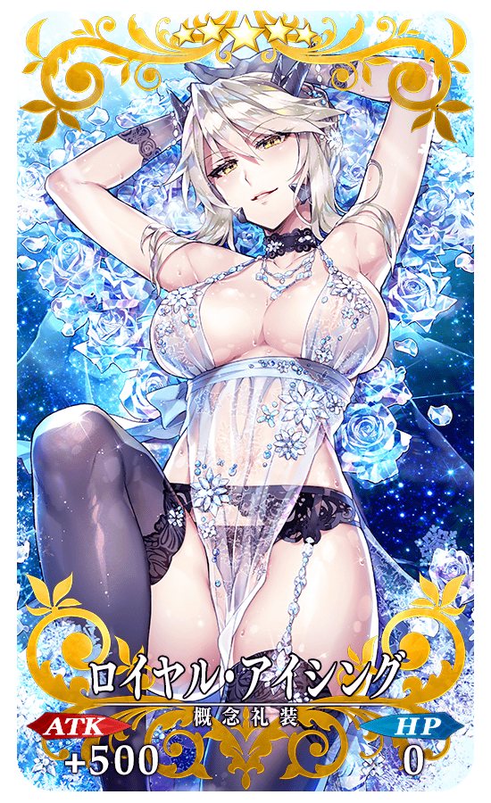 |
★★★★★SSR |

|
★★★★★SSR |

◆關於活動報酬指令紋章的注意◆
獲得過上次舉辦時的活動報酬指令紋章的情況，可獲得稀有稜鏡和魔力稜鏡代替指令紋章。
※對象指令紋章的稀有度對應的可獲得報酬有異。
※就算靈基變還(販賣)在期間限定活動「神秘之國ＯＮＩＬＡＮＤ!! ～鬼王與卡姆伊的黃金～」中獲得過的各指令紋章而消失的情況，在期間限定活動「復刻:神秘之國ＯＮＩＬＡＮＤ!! ～鬼王與卡姆伊的黃金～ 輕量版」中的報酬仍會變化成稀有稜鏡和魔力稜鏡。
| 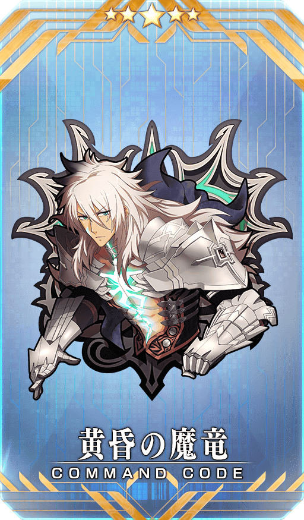 |
【活動限定】 |

|
★★★★SR
|


|
★★★R |
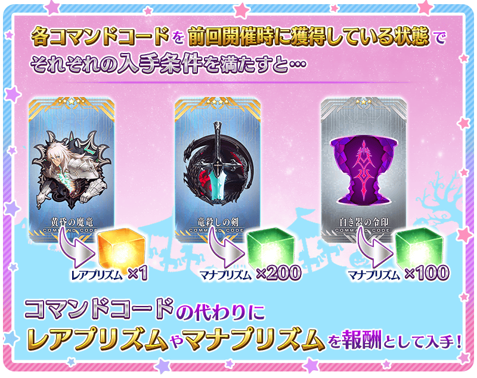


◆靈基再臨◆
使用可靠「好朋友點數達成報酬」入手的「護法のステッキ」，重複4次靈基再臨的話，卡面會有所變化！
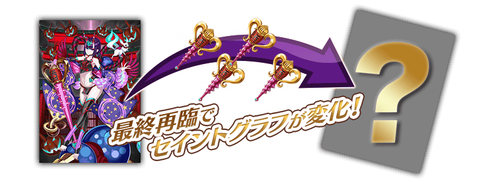
※「★4(SR)酒吞童子(Caster)」不會隨靈基再臨使戰鬥角色的外觀變化。
◆再入手特典◆
在復刻前的期間限定活動「神秘之國ＯＮＩＬＡＮＤ!! ～鬼王與卡姆伊的黃金～」入手「★4(SR)酒吞童子(Caster)」的情況，在本活動能獲得再入手特典。
入手「累計6位以上」「★4(SR)酒吞童子(Caster)」的話，第6位以後，每新入手1位就贈送稀有稜鏡1個至禮物箱。
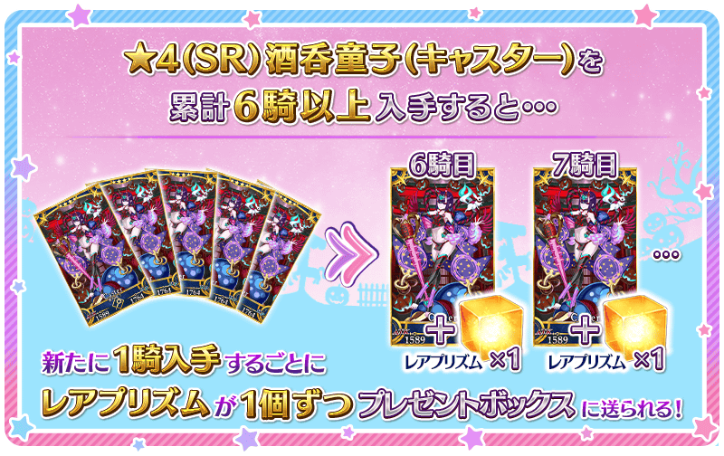
介紹「★4(SR)酒吞童子(Caster)」的寶具演出！
在「Fate/Grand Order」官方網站內的公告中，以影片公開寶具演出，敬請確認。
其他還有，期間限定「復刻 萬聖節2018Pick Up召喚(每日交替)」同時舉辦！
關於詳情，請自下述橫幅確認。